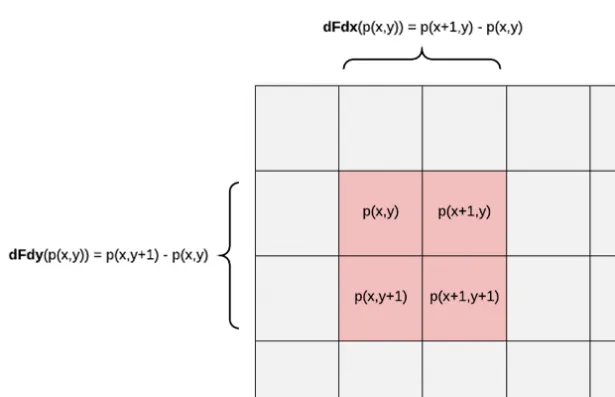
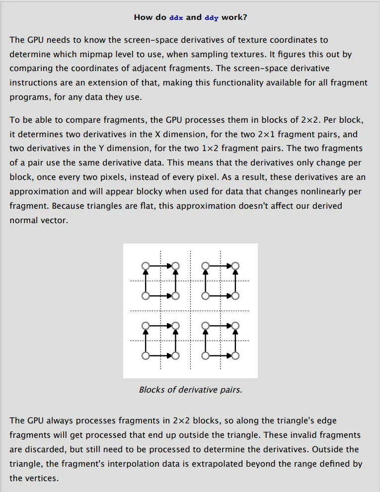

RealTime-Rendering18-dFdx/dFdy/fwidth
dFdx/dFdy/fwidth
Basis

$fwidth/dFdx/dFdy$是GLSL中的函数方法，$ddx/ddy$是HLSL中的方法，他们都是用于计算变量基于屏幕空间像素变化率的方法。
- dFdx(v) = 该像素点右边的v值 - 该像素点的v值
- dFdy(v) = 该像素点下面的v值 - 该像素点的v值
- fwidth(v) = abs( dFdx(v) + dFdy(v))
- fwidth、dFdx/dFdy 只可以在片元着色器中使用
- fwidth、dFdx/dFdy 计算的是逐像素的变量差值，而不是逐片元
- fwidth、dFdx/dFdy 接收什么类型的参数，返回值就是什么类型的参数
- fwidth、dFdx/dFdy 参数可以是任意参数，但应该是从顶点着色器中传递的参数（varying）
- 假如传入的参数为一个固定的值，那么像素差值为0，因为所有像素输出的值都一样，导数自然为0

2×2Quad并行处理机制, GPU以2×2的片段块(Quad)为单位处理片段, 也就是说导数数据是每两个像素变化一次,而不是每一次!
samples
纹理 LOD 选择 / 各向异性过滤
1 | vec2 texCoord = ...; //屏幕空间，uv需要乘以纹理宽高 |
片元着色器中片元计算法线
1 | in vec3 vWorldFragPos; |
线框着色
1 | barys.z = 1 - barys.x - barys.y; |
References: